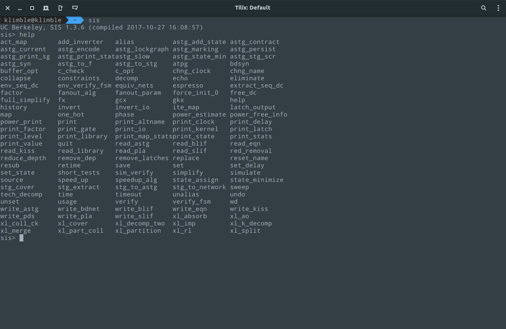

SIS
SIS is an interactive tool for synthesis and optimization of sequential circuits. Given a state transition table, a signal transition graph, or a logic-level description of a sequential circuit, it produces an optimized net-list in the target technology while preserving the sequential input-output behavior. Many different programs and algorithms have been integrated into SIS, allowing the user to choose among a variety of techniques at each stage of the process. SIS serves as both a framework within which various algorithms can be tested and compared, and as a tool for automatic synthesis and optimization of sequential circuits.Here you'll find two different version of SIS. The first is version 1.3, which has been released in 2005 (though it was unofficial). The other one is version 1.4, which has been released in 2018, and it contains a refactored version of the software. 
Downloads
Available packages for version 1.3:Download Debian package Download binary tarball
The binary version contains a static linked binary, for compatibility reasons.
The source code is available in both tarball and zip:
Download source (.tar.gz) Download source (.zip)
Available packages for version 1.4:
Download Debian package
The source code is available in both tarball and zip:
Download source (.tar.gz) Download source (.zip)
If you're using a Debian-based distribution like Ubuntu, just download the .deb file and install it,
either through GDebi or simply by dpkg (sudo dpkg -i sis_1.3.6-1-amd64.deb).
If you downloaded the static linked archive, there's a bash script that install and set it up.
If you downloaded the source tarball, be aware that the 1.3.6 version might not compile on your machine.
Before trying to compile it, make sure you have the correct dependencies:
sudo apt install -y make gcc bison flex build-essential
Try configuring it for using GNU90 GCC standard:
export CFLAGS=-std=gnu90
./configure prefix=/usr/local --without-x
make
sudo make install
make -jn where n is the number
of your cores starting from 0.
Version 1.4 should compile just fine, just make sure you installed the correct dependencies:
sudo apt install -y make gcc bison flex build-essential
and then run:
./configure prefix=/usr/local
make
sudo make install